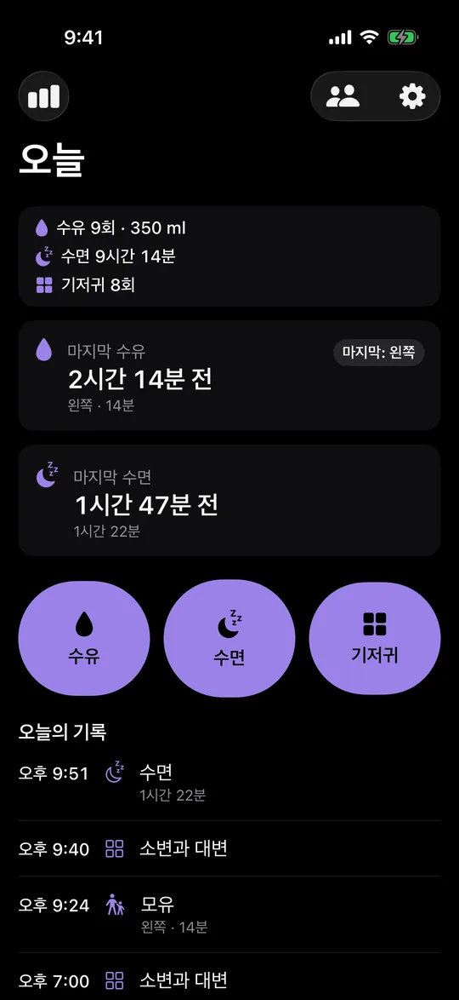
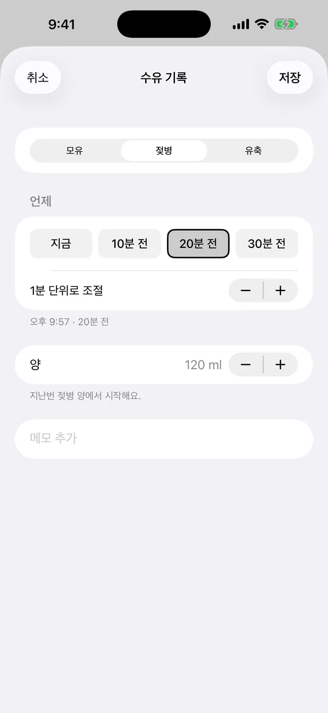
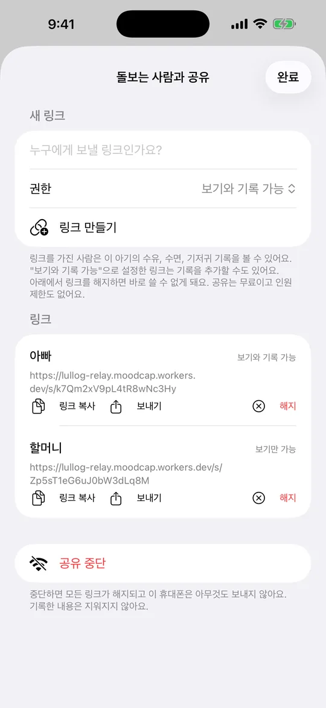
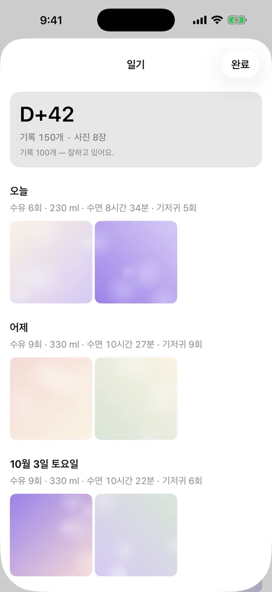
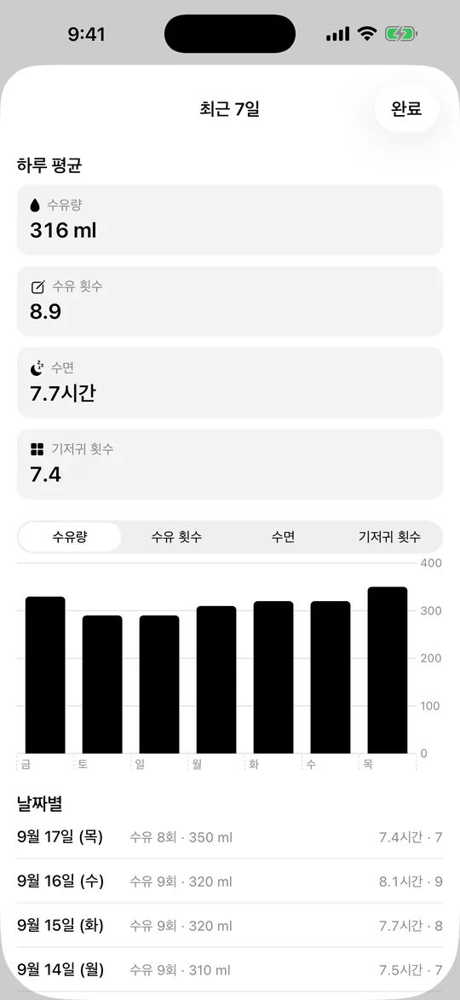
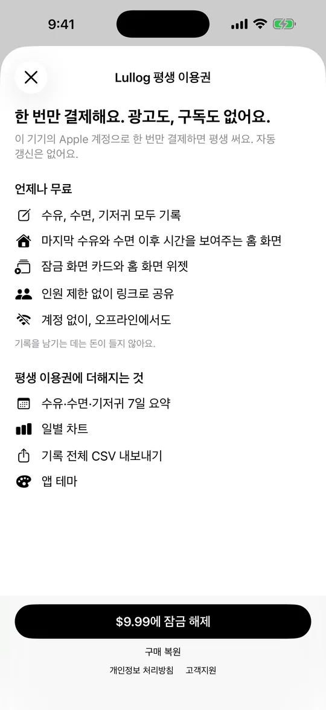

새벽 3시에도 두 번 누르면 끝나는 수유 기록
앱을 열지 않고 잠금화면에서, 목소리로, 또는 두 번의 탭으로 기록해요. 배우자, 조부모, 돌봄 선생님은 링크 하나만 열면 같은 기록을 함께 봅니다.
기록은 무료 · iPhone · iOS 17 이상
- 오프라인 우선
- 광고 없음
- 회원가입 없음
- 앱 안 열고 기록

앱 안 열고 기록
앱을 열지 않아도 기록돼요
잠금화면과 홈 화면 위젯에서 버튼 한 번으로 기록해요. 수유 타이머 시작, 지난번과 같은 젖병, 기저귀, 수면 타이머 시작을 바로 누를 수 있습니다.
Siri에게 "Lullog에서 젖병 기록"이라고 말하거나 단축어를 동작 버튼에 지정할 수 있어요. iOS 18에서는 제어 센터에 Lullog 버튼을 추가할 수 있습니다.
이 버튼들과 Siri, 음성 기록은 최신 버전의 Lullog에서 무료로 쓸 수 있어요. 위젯과 라이브 액티비티는 마지막 수유와 수면 이후 지난 시간도 보여 줘요. Lullog는 지난 시간을 보여 줄 뿐, 다음 수유 시간을 예측하지 않습니다.
음성
말로 기록해요
마이크를 누르고 "젖병 120"이나 "소변"이라고 말하면 기록이 저장되고 실행 취소 버튼이 나타나요.
음성은 iPhone 안에서만 인식되며 밖으로 나가지 않습니다. 한국어, 영어, 일본어, 중국어, 스페인어, 독일어, 프랑스어, 포르투갈어, 이탈리아어를 지원하고, 기기 내 인식을 쓸 수 없는 환경에서는 마이크 버튼이 보이지 않아요.
기록
깜빡 잊은 수유도 두 번이면 기록돼요
수유 버튼을 누르고 모유, 젖병, 유축 중 하나를 고른 뒤 저장하면 끝입니다. 기록을 놓쳤다면 시간 휠 대신 "10분 전", "20분 전", "30분 전"을 누르세요.
지난번과 같은 양이라면 오늘 화면의 "지난번처럼 · 120 ml"를 한 번만 누르면 돼요.
수유와 기저귀 기록에 사진을 붙일 수 있어요. 사진은 이 iPhone에만 보관되고 동기화되거나 공유되지 않습니다. 저장한 뒤 5초 동안은 실행 취소로 되돌릴 수 있어요.

잠금화면
잠금을 풀지 않고 타이머를 멈춰요
수면이나 모유 수유 타이머가 돌아가는 동안 잠금화면 라이브 액티비티에 타이머와 정지 버튼이 보입니다. 정지를 누르면 기록이 저장돼요. Face ID나 암호도, 아기를 내려놓을 필요도 없습니다.
잠금화면 타이머는 다른 기록 기능처럼 무료예요.
공유
돌봐 주는 사람 모두에게 링크 하나
배우자, 조부모, 돌봄 선생님에게 링크를 보내세요. 받은 사람은 아무 브라우저에서 열어 기록을 보고, 허용하면 직접 기록도 남깁니다. 앱 설치도 회원가입도 필요 없고, 인원당 요금도 없어요.
사람마다 따로 링크를 만들고 "보기와 기록 가능" 또는 "보기만 가능"으로 정할 수 있습니다. 링크를 해지하면 바로 쓸 수 없게 돼요.
공유는 기본으로 꺼져 있고, 직접 "동기화 연결"을 눌러야 켜집니다. 그 전까지 Lullog는 어떤 네트워크 요청도 보내지 않으며 기록은 iPhone 안에만 있습니다.

일기
하루하루 쌓인 기록을 일기처럼
일기 화면은 날짜별 합계와 함께 붙인 사진을 모아 보여 줘요. 맨 위에는 태어난 지 며칠째인지 D+N으로, 지금까지의 기록 수와 사진 수가 표시됩니다.
연속 기록 같은 압박은 없어요. 일기는 무료입니다.

Lullog Lifetime
최근 7일을 한 화면에
하루 평균 수유량, 수유 횟수, 수면 시간, 기저귀 횟수를 막대 차트와 날짜별 목록으로 보여 줘요. 영유아 검진이나 가족과 이야기할 때 지난 일주일을 돌아볼 수 있습니다.
7일 요약, 일별 차트, CSV 내보내기는 1회 결제인 Lullog Lifetime에 포함돼요.

가격
한 번 결제로 끝, 구독 없음
기록하고 공유하는 데 필요한 기능은 모두 무료이고, 광고도 공동양육자 인원 제한도 없습니다. 일주일 흐름을 보고 싶을 때만 Lullog Lifetime을 한 번 결제하면 돼요.

무료
무료
- 수유·수면·기저귀 기록
- 오늘 화면과 타임라인
- 홈 화면 위젯
- 잠금화면 라이브 액티비티
- 잠금화면 타이머·정지
- 위젯·Siri·제어 센터에서 기록
- 음성 기록(기기 내 인식)
- 사진과 일기
- 공동양육자 링크 공유, 인원 제한 없음
- 광고 없음
Lullog Lifetime
한 번 결제 1회 결제 · 가격은 App Store에서 확인
구독이 아닙니다. 나라별 가격은 구매 전에 App Store에서 확인할 수 있어요.
- 무료 기능 전부
- 7일 요약
- 일별 차트
- CSV 내보내기
가입 없이 무료로 쓰는 웹 도구
- 수유텀 가이드
월령별 수유 간격과 수유량을 정리한 글입니다. 가입 없이 무료로 읽습니다.
- 수유텀·수유량 계산기
아기 몸무게와 월령으로 하루 수유량과 간격을 가늠해 보는 웹 계산기입니다. 가입 없이 무료로 씁니다.
- 인쇄용 수유 기록지
손으로 적는 종이 기록지를 브라우저에서 바로 인쇄합니다. 가입 없이 무료로 씁니다.
오늘 밤 수유부터 기록해 보세요
다운로드와 기록은 무료예요. 주간 요약이 필요할 때만 한 번 결제하면 됩니다.
Lullog는 기록장이며 의료 조언이 아닙니다. 수유나 수면이 걱정된다면 소아청소년과 전문의와 상담하세요.